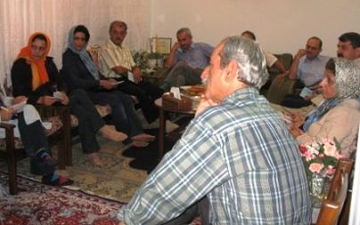

پذيرش > گزارش ویژه > ویژه سالگرد کمپین > همراه شو عزیز...با همراهان در بابل
 گزارشی از نشست کمپین با فعالان اجتماعی بابل گزارشی از نشست کمپین با فعالان اجتماعی بابل

 همراه شو عزیز...با همراهان در بابل همراه شو عزیز...با همراهان در بابل
11 شهریور 1386 - محبوبه حسین زاده ، آیدا سعادت - نسخه قابل چاپ

این بار انگار زمين و زمان دست به دست هم داده بودند كه ما به بابل برسيم. ساعت 11 شب بود و ترمينال آزادي مملو از جمعيت. همه از ترافيك سنگين و معطلي بيش از ده ساعت در جاده هاي شمال حرف مي زدند. باز هم شايد مي شد راه ديگري را براي رسيدن به بابل امتحان كرد. بايد مي رفتيم.
تماس با ترمينال شرق اميدوارمان كرد و راهي مسير طولاني ترمينال شرق شديم . ساعت يك شب بود كه به تعاوني تاكسي هاي كرايه رسيديم . وسايل سفر همراهمان نبود و گرنه ماشين بود. مسئول تعاوني مي گفت اولين ماشين فردا صبح ساعت 5 حركت مي كند و براي اين كه در ترافيك جاده هاي شمال نمانيم، سر ساعت بايد در ترمينال باشيم.
با ميترا تماس مي گيريم که آدرس خانه شان در شمال را به ما بدهد تا در اين روزها، مجبور به پرداخت هزينه مكاني براي اقامت يك روزه مان نباشيم. صحبت هاي ميترا، شادي مان را در شروع اين سفر مضاعف كرد. مي توانستيم با ماشين آنها به شمال برويم ولي بايد ساعت سه صبح حركت مي كرديم.
خسته بوديم اما بايد براي بستن بار سفر و برداشتن كوله باري از دفترچه هاي كمپين و برگه هاي امضا به غرب تهران بر مي گشتيم .پس به سمت خانه راه می افتیم. تمام مسير صداي بلند پخش ماشين رهگذران و ماشين هاي عبوري را جذب صداي دلنشين سرود كمپين و جنبش زنان مي كرد. همه با لبخند و كنجكاوي يا تكان سري به نشانه ي تاييد به اين صدا گوش مي دادند.
و ساعتی بعد جاده هاي سرسبز شمال بود و ما كه مي رفتيم تا از كمپين يك ميليون امضا بگوييم و از تلاش براي تغيير قوانين تبعيض آميز....
ساعت 11 صبح روز پنج شنبه در ميدان «حمزه كلا» بوديم و در جستجوي خانه پروانه كه از روز هشت مارس منتظر حضور اعضاي كمپين بود. استقبال گرم پروانه خستگي سفر را از تنمان بدر کرد و نيم ساعت بعد از ما بود كه دختر جوان و دامادش نيز با چمداني بزرگ از راه رسيدند تا در اين نشست حضور داشته باشند و بعد از آنها همسر پروانه با جعبه اي شيريني و كوله باري از تجربيات سالها فعاليت در عرصه اجتماعي. هر چه بيشتر با پروانه و فعاليت هايشان آشنا مي شديم بيشتر اميدوار مي شديم از به ثمر رسيدن تلاش براي تغيير شرايط زنان در عرصه فرهنگ و اجتماع.
كين درد مشترك هرگز جدا جدا درمان نمي شود...
قرار نشست براي ساعت پنج بعدازظهر تنظيم شده است و درست از همين ساعت زنگ در به صدا در مي آيد و مهمانان يكي يكي به جمع ما مي پيوندند. قرار بود نشست با حضور تعداد بيشتري برگزار شود اما به دليل تعطيلات ناگهاني، 15نفر توانستند خود را به نشست برسانند همان طور كه ما نيز قرار بود چهار نفر باشيم و دو نفر شديم.
كمترين آنان 40 سال سن داشت و جوان ترين آنها حداقل چندين سالي بيشتر از ما، فعاليت در عرصه فرهنگ و اجتماع را تجربه كرده بود و البته بعضي از آنان حتي عرصه سياست را . هرچند در معرفي خود، كلامي از اين همه تجربه نمي گفتند و اگر پروانه نبود، شايد هرگز نمي دانستيم كه با تاثيرگذارترين چهره هاي اجتماعي شهر بابل هم صحبت شده ايم.
سالگرد كمپين را بهانه اي مي كنيم براي معرفي فعاليت هاي يك سال اخير. چند دقيقه اي از شروع صحبت هاي ما نمي گذرد كه يكي از مردان جمع بر اساس شنیده ها با چهره خندان مي گويد:« چرا فقط يك صد هزار امضا در يك سال». پاسخ را به بعد از توضيحات در مورد جزوه حقوقي موكول مي كنيم. مرد باز مي خندد و مي گويد:« بياييد بحث را به صورت تخصصي تر ادامه دهيم. چون همه ما با اين تبعيض قانوني به صورت كامل آشنايي داريم.» و بحث در مي گيرد و آنجاست كه با فعالاني روبرو هستيم كه كليه اخبار سايت را به روز پيگيري مي كنند و نگراني ها و دغدغه هايي دارند برای ادامه فعالیت کمپین كه حاصل سالها تجربه فعاليت در فضاي استبدادزده است.
از روند جمع آوري امضا مي پرسند. از زماني كه براي برنامه ريزي كارگاه ها و آموزش داوطلبان صرف مي شود، مي گوييم و از فشارهاي امنيتي كه هر روز عرصه را براي جمع آوري امضا تنگ تر مي كنند. سري به نشانه ي تاييد تكان مي دهند و ديگري مي گويد: «با اين اوصاف جمع آوري همين تعداد امضا هم كار بزرگي بوده است. كاري كه نشان از تلاش هاي بي وقفه و عزم راسخ داوطلبان كمپين دارد.»
مي گويند : « آيا با توجه به پيش بيني شما از فشار هاي امنيتي، دوسال براي جمع آوري تعداد يك ميليون امضا كافي است؟ چرا به جاي تعداد یک ميليون امضا بر روند آگاه سازي جامعه از قوانين تبعيض آميز تاكيد نشده است . آيا تاثير گفتگوي چهره به چهره با مردم و تلاش براي همراه ساختن آنان با خواست تغيير براي برابري كار كمي است؟» باز در تاكيد بر تجربه ساليان از روند سخت فرهنگ سازي در جامعه مي گويند و از كمپين يك ميليون امضا به عنوان یک جنبش نام مي برند كه شاید هنوز روزهاي طولاني را پيش رو دارد.
از استراتژي و تاكتيك هاي مورد استفاده براي ادامه ي فعاليت مي پرسند و از تربيت نيروهايي صحبت مي كنند كه بتوانند در صورت نبود هر كدام از اعضاي اوليه جايگزين توانمندي براي آنها باشند .
سعي مي كنيم در كمال آرامش به تك تك ترديد ها و پرسش هاي آنان پاسخ دهيم و البته خودمان هم متعجب مانديم از اين آرامش. يك سال كار با كمپين فرصتي خوبي بوده تا بياموزيم كه از نقد سازنده نبايد ترسيد.
گلايه دارند كه چرا تلاش بيشتري براي جذب و همراه كردن نيروهاي فعال اجتماعي ساير شهرها انجام نشده است و ما با تاكيد بر اينكه چنين برنامه اي از آغاز مطرح بوده، انتقاد می کنیم که شما كه از جزئي ترين اتفاقاتي كه بر ما گذشته مطلع بوده ايد چرا تا كنون براي ارتباط با اعضاي كمپين اقدام نكرده ايد؟ و با تشريح روند فعاليت كمپين در شهرها از برگزاري كارگاه هاي كمپين و تشكيل گروههاي داوطلب براي جمع آوري امضا در ساير شهرهاي كشور مي گوييم.
تاريخ را ورق مي زدند و تجربيات ناموفق جنبش هاي اجتماعي را بازخواني مي كردند تا اين بار صد سال پس از مشروطه باز هم جنبشي ديگر ناكام نماند. یکی از ویژگی های استراتژی خوب برای یک جنبش اجتماعی می گوید و کمپین یک میلیون امضا را دارای این استراتژی خوب می داند و دیگری از ایجاد زیرساخت های لازم برای تحقق دموکراسی و حقوق زنان در جامعه سنتی ایران و تاکید بر ایجاد این زیرساخت ها از طریق آگاه سازی افراد و به خصوص زنان از طریق همین روش «چهره به چهره» که در کمپین پیش گرفته ایم.
و بحث همچنان بر سر موارد ديگري ادامه داشت؛مواردی که شاید مجالی برای طرح آن در این اندک نیست. پاسخ هاي ما به نظر قانع كننده بودند. برگه هاي امضا در ميان آنان دست به دست مي چرخد و متوجه مي شويم كه تعدادي از آنان پيش از اين برگه كمپين را امضا كرده اند. حالا ديگر صحبت از برنامه ريزي براي ادامه كار كمپين توسط همين فعالان در شهر بابل و برگزاري نشست هاي تكميلي است.
صاحب تجربه ترين مرد جمع كه از ابتداي نشست با آرامشي خاص، صبورانه به همه موارد گوش مي داد، مي گويد:« تاكنون يك سال در مقابل امضاي اين كمپين به رغم اصرار دوستان مقاومت كردم به دليل تمام موارد سوال و انتقادي كه مطرح شد. اما امروز با حضور و تلاش تان براي پاسخ گفتن به اين انتقادات، قانع شدم و با كمال ميل، برگه كمپين را امضا مي كنم.»
ادامه مي دهد:« هنوز متعجبم و متاسف مي شوم وقتي مي بينم دختران سرزمينم براي رسيدن به حق خود بايد متحمل زندان و اين حجم وسيع فشارهاي امنيتي مي شوند. مگر شما چه می خواهید؟!!»
با اين امضاها، خستگي سفر و چند ساعت بحث از تنمان بيرون مي رود و آرام زمرمه مي كنيم: همراه شو عزيز، همراه شو، كين درد مشترك هزگر جدا جدا درمان نمي شود...
ارسال به
بالاترین
،
توییتر
،
فریندفید
،
فیسبوک
در همين بخش :
 بروشور اعتراض به لایحه حمایت از خانواده بروشور اعتراض به لایحه حمایت از خانواده
2200 نفر به فراخوان ائتلاف گروهها و فعالان جنبش زنان علیه لایحه خانواده پیوستند
اعتراض بیش از 900 نفر از فعالان جنبش زنان و مدافعان حقوق برابر به حکم هانا عبدی:حکم هانا عبدی غیر منصفانه است و با معیارهای قانونی و قضایی منطبق نیست
22 خرداد در كنار درياچه زريوار
دختری که از من پیرتر بود/ تقدیمی از ایرج جنتی عطایی به جنبش زنان ایران
ديگر بخش ها :
طرح یک میلیون امضا
|
مقالات
|
سایت نوشته ها
|
اخبار
|
گزارش كمپين
|
گفت و گو
|
علیه سکوت
|
كوچه به كوچه
|
نامه های شما
|
گزارش ویژه
|
گفتگو با اعضا
|
ویژه سالگرد کمپین
|
تصویر برابری
|
دل آرام علی
|
تریبون
|
مقالات
|
تاریخ شفاهی
|
خارج از چارچوب
|
کتابخانه
|
درباره کمپین
|
کمپین در شهرها
|
کمپین در بند
|
صدای تغییر
|
ویژه 22 خرداد
|
لایحه حمایت از خانواده
|
گالری
|
عشا مومنی
|
امیر یعقوبعلی
|
خدیجه مقدم
|
راحله عسگری زاده و نسیم خسروی
|
پروین اردلان،جلوه جواهری، مریم حسین خواه، ناهید کشاورز
|
زینب پیغمبرزاده
|
سعیده امین، سارا ایمانیان، محبوبه حسین زاده، ناهید کشاورز و همایون نامی
|
احترام شادفر
|
نسیم سرابندی زاده،فاطمه دهدشتی
|
وبلاگ مهمان
|
پرونده خرم آباد
|
دستگیری ها
|
مریم مالک
|
پرستو اللهیاری
|
مهرنوش اعتمادی
|
سمیه رشیدی
|
Other Languages
|
همراهان
|
«فراخوان کمپین ده روز با بهاره هدایت»
| English
|